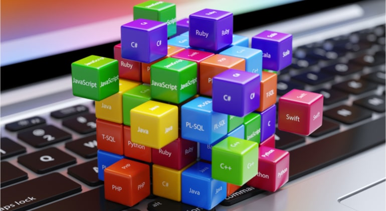
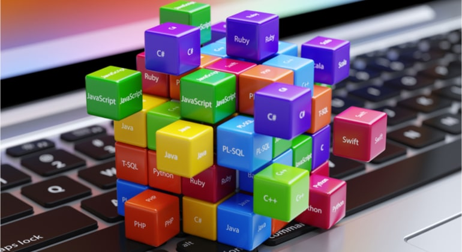

.png)


search's GHS


www.linguagens-de-2021.com.br
Linguagens de programação mais usadas
Veja as 5 linguagens de programação mais usadas no mercado. Python domina ranking de linguagens de programação de 2020 ... final nada surpreendente: Python continua a linguagem mais popular em 2020. veja mais...
www.linguagens-para-2021.com.br
Linguagens de programação mais usadas no mundo
“Tem para todos os gostos”, essa é uma verdade sobre a área de programação, Porém, apesar de existir uma grande variedade de linguagens, algumas podem ser mais adequadas para certas empresas e este entendimento vem do profissional habilitado para essa função. Não é só programar, mas compreender o contexto pelo viés de negócios. veja mais...
www.linguagens-para-2021.com.br
Programação - Wikipédia, a enciclopédia livre
Programação é o processo de escrita, teste e manutenção de um programa de computador. O programa é escrito em uma linguagem de programação, embora seja possível, com alguma dificuldade, o escrever diretamente em linguagem de máquina. veja mais...
www.linguagens-para-2021.com.br
Linguagens de programação para iniciantes
Para o iniciante, existem diversas linguagens para começar a programar. E tenha a certeza de que todo profissional da área tem uma preferida. Por isso, queira você desenvolver aplicativos, queira desenvolver sites, entre outras possibilidades, veja mais...
Imagens:

 
